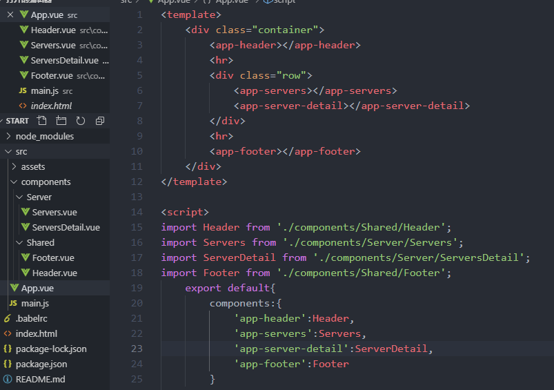

采用更好的目录结构

怎样给组件标签命名（方便选择器选择）
有三种方式：
1带横杠式
'app-header':Header
2驼峰式
appHeader:Header
3ES6
Header:header
组件样式作用域
对于每个单文件模板的样式作用域可分为两种：
全局作用域：
<style>
div{
border:1px solid blue;
}
</style>
局部作用域：
<style scoped>
div{
border:1px solid blue;
}
</style>
可以看出是关键字scoped起作用
对于每个单文件模板的style都会添加到最后生成的文件的style上
对于全局作用域style，直接添加进去
对于局部作用于，会给对于作用域的块添加一个特定的data属性

添加的顺序与import的顺序一致

父组件向子组件传值
在子组件中使用props属性接收父组件传递的值，类似data属性
<template>
<div class="component">
<h3>You may view the User Details here</h3>
<p>Many Details</p>
<p>User Name:{{ name }}</p>
</div>
</template>
<script>
export default{
//设置props属性，值可以为一个数组形式，或者对象形式
props:['name']
}
</script>
<!-- 在父组件中传递值方式，就是向子组件的name属性绑定值 -->
这里的属性名name必须与子组件中数组内定义的一致
<app-user-detail :name="name"></app-user-detail>
props属性下的值的使用方式与普通的data中的值使用方式一样
props:['myName'],
methods:{
switchName(){
//访问props中的属性与data中的属性是一样的，通过this.来访问
return this.myName.split("").reverse().join("")
}
}
通过对props属性设置一些属性来对传入的值的格式等进行约束
// props属性用于接收父组件传递的值
props:{
//对传入的值的类型设置验证
// 可以设置成这样的单个值的形式
// myName:String
// 也可以设置成对象的形式
myName:{
type:String,
//传入的参数必须有值
required:true
// 也可以设置默认的值
// default:'default'
// 当类型为数组或者对象时,default写成函数形式
// type:Object,
// default:function(){
// return {
// name:'fangjie'
// }
// }
}
},
子组件向父组件传值两种方式：
一、在子组件中使用自定义事件
子组件中
resetName() {
this.myName = "fangjie";
//使用Vue内置方法触发一个自定义事件，一个参数为事件名称
//第二个参数为传递的数据
this.$emit('nameWasReset',this.myName)
}
父组件中
监听这个事件，使用$event获取传递的值
<app-user-detail :myName="name" @nameWasReset="name = $event"></app-user-detail>
二、回调函数：在父组件中定义函数，通过props传递该函数，函数执行后会将值返回给父组件
父组件中
<app-user-detail
:myName="name"
@nameWasReset="name = $event"
:resetFn="resetName"></app-user-detail>
methods:{
changeName(){
this.name = 'Anna'
},
resetName(){
this.name = 'fangjie'
}
}
子组件中
<button @click="resetFn()">Reser Function</button>
props: {
//对传入的值的类型设置验证
// 可以设置成这样的单个值的形式
// myName:String
// 也可以设置成对象的形式
myName: {
type: String,
//传入的参数必须有值
required: true
// 也可以设置默认的值
// default:'default'
// 当类型为数组或者对象时,default写成函数形式
// type:Object,
// default:function(){
// return {
// name:'fangjie'
// }
// }
},
//接受父组件中的函数
resetFn:Function
},